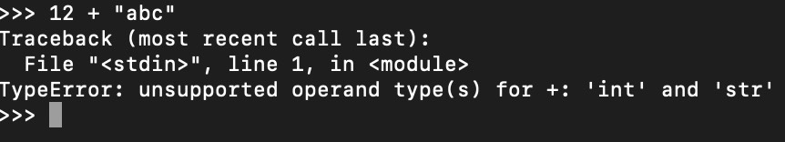
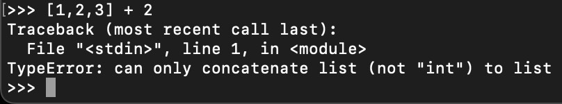

Problem 1:
A: Identify the canonical JavaScript type:
a) dingus: No.
b) array: No, arrays are not canonical JavaScript types.
c) boolean: Yes.
d) int: No, int is not a canonical JavaScript type, it is defined as number
e) number: Yes, number is a canonical JavaScript type.
f) class: No, JavaScript does not have classes.
g) regex: No, regex is defined as a string.
h) string: Yes.
i) Unicode: No, unicode is not a canonical JavaScript type, it is defined as string
j) object: Yes.
k) null: Yes.
l) function: Yes.
m) NaN: No, NaN is defined as a number.
n) char: No, there is no char in JavaScript.
o) pointer: No.
p) undefined: Yes.
B: Examples of canonical JavaScript types:
C: Indentify unusal or unexpected JavaScript type behaviors:
Problem 2:
-
Type coercion means that JavaScript converts one type to another.
-
In Python, we cannot add an integer to a string cause it will raise TypeError.
However, in JavaScript, we can add an integer to a string and the output will be a string.

-
In Python, we cannot concatenate an integer to a list, while in JavaScript, it does not matter.
The output will also be string with the first/last element concatenated with the input integer.

-
Examples of type coercion:
Problem 3:
Built a factorial function:
Problem 4:
Assignments will be posted to CMS on Mondays, we have to look up the course schedule to make sure the due date.
For any late submission, wrong format of compressed file that caused the grader unable to open it, or submissions with missing files will not be accepted.
However, we have 5 slip days for use if we are unable to submit the assignment before deadline.
Also, the lowest two grades will be dropped.